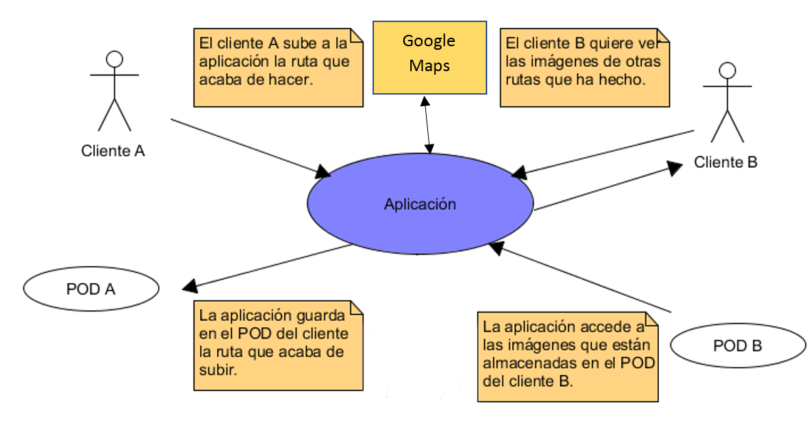
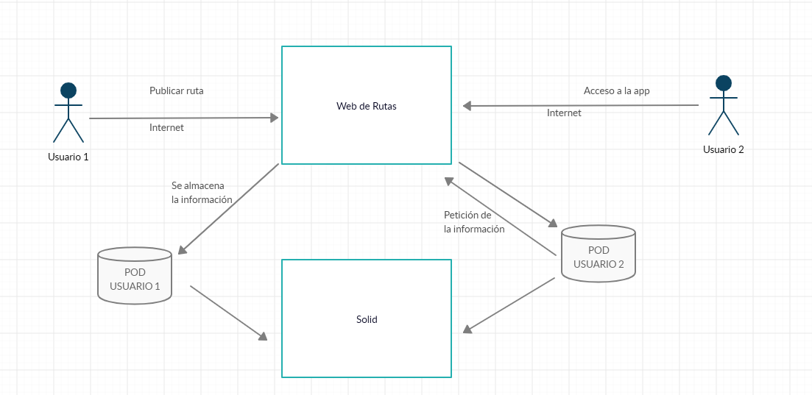
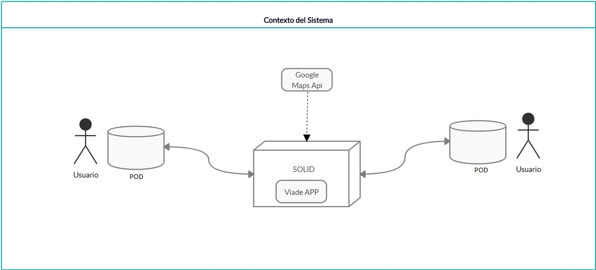
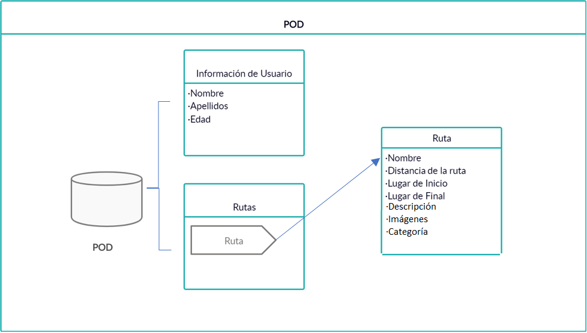
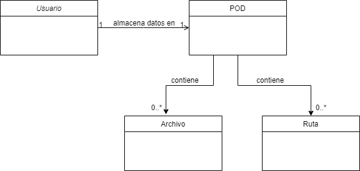

1. Introducción y objetivos
Vamos a crear Viade, un sistema de gestión de rutas descentralizado basado en las especificaciones Solid.
Los usuarios de la aplicación podrán crear rutas y decidir con quien comparten esas rutas.
Para realizar el sistema se utilizará el framework React.
1.1. Vista de requisitos
-
El sistema se basará en una arquitectura descentralizada para que los datos estén separados de la aplicación.
-
Los usuarios podrán crear sus propias rutas, añadiendoles una categoría y contenido multimedia en alguna de las escalas.
-
Los usuarios podrán visualizar sus rutas en una mapa.
-
Los usuarios podrán almacenar las rutas en sus propios pods.
-
Los usuarios podrán compartir estas rutas con sus amigos.
-
Los usuarios podrán ver las rutas que sus amigos han compartido con él.
-
Seguridad de la información de los usuarios usando datos descentralizados.
-
Sistema usable para todo tipo de usuarios.
-
El sistema debe ser capaz de operar adecuadamente con varias sesiones simultáneas.
1.2. Atributos de calidad
Los atributos de calidad en los que nos centraremos durante el desarrolo serán los siguintes:
-
Disponibilidad, la intención de la aplicación es la de funcionar como una red social, por tanto, debemos tener la aplicación siempre disponible porque se espera tráfico constante de datos entre usuarios.
-
Seguridad, una de las principales características de nuestra aplicacion es la de ofrecer a los usuarios un entorno seguro para compartir sus datos, así que la seguridad debe ser un punto importante a tener en cuenta.
-
Testabilidad, para poder desarrollar el proyecto de forma rápida debemos hacer la aplicación testeable para mantenerla organizada y no perder tiempo en el futuro con problemas iniciales.
-
Usabilidad, como la aplicación que queremos desarrollar es relativamente novedosa, nos interesa que sea fácil de usar y no genere rechazo por parte de los usuarios.
A continuacción se muestra una tabla con los atributos de calidad ordenados por prioridad y hacia quien van dirigidos.
| Prioridad | Atributo | Personas interesadas |
|---|---|---|
1 |
Seguridad |
Todos |
2 |
Usabilidad |
Usuarios finales |
3 |
Testabilidad |
Equipo de desarrolo |
4 |
Disponibilidad |
Usuarios finales |
1.3. Stakeholders
| Role/Name | Descripcion | Expectativas |
|---|---|---|
Equipo de Desarrollo |
Encargados de desarrollar el producto. |
Realizar un sistema que cumpla con los requisitos descritos en la documentación |
Usuarios Finales |
Personas que acabarán utilizando el producto |
Deben poder utilizar almacenar y compartir sus rutas de una manera sencilla e intuititiva |
Equipo de Profesores |
Profesorado de la asignatura |
Supervisar un desarrollo constante del proyecto para cumplir con los requisitos del mismo |
2. Restricciones de la arquitectura
| Restricción | Explicación |
|---|---|
Usar el framework React |
Sera necesario aprender a usar React |
Usar la arquitectura Solid |
Sera necesario aprender como es la arquitectura Solid |
Usar una base de datos descentralizada |
Tendremos que aprender a crear y trabajar con bases de datos descentralizadas |
Usar GIT |
Tendremos que acostumbrarnos a utilizar GIT |
Trabajar con una API de mapas |
Sera necesario utilizar una API de mapas para la aplicacion, teniendo que escoger la que creamos mas conveniente. |
3. Contexto y alcance del sistema
3.1. Contexto de negocio
La aplicación permite a los usuarios de la misma subir sus rutas, añadir fotos de las mismas, verlas de forma detallada e individual y ademas compartilas con otros usuarios de forma descentralizada gracias a los POD, que son almacenes de datos en línea y son personales para cada usuario.

Leyenda del diagrama
| Participante | Contexto |
|---|---|
Cliente |
Utiliza la aplicación, comparte sus rutas,busca rutas de otros usuarios, etc. |
POD |
Son los almacenes donde se encuentran todos los datos del cliente que se necesitan para utilizar la aplicación, es decir, en estos almacenes es donde se guardan las rutas, las fotos, los mensajes, etc. La clave de utilizar los POD es que nos permite separar la aplicación de los datos. |
Aplicación |
Cuando un usuario quiera realizar una acción en dicha aplicación, esta accederá a su POD para realizar la operación deseada, como por ejemplo, subir una ruta. |
Google Maps |
Utilizado para mostrar las rutas. |
3.2. Contexto técnico
Nuestra aplicación es una aplicación web descentralizada, donde los datos se almacenarán en los Pods de los usuarios,por lo que la aplicación deberá estar conectada a internet.
Los usuarios podrán acceder a sus rutas, fotos y a las rutas de otros usuarios que previamente les compartan una ruta determinada a través de Internet, sin la necesidad de un lugar central para almacenar los datos.

Leyenda del diagrama
| Objeto | Descripción |
|---|---|
Web de rutas |
Es la aplicación web. |
POD |
Son los almacenes donde se encuentran todos los datos del cliente que se necesitan para utilizar la aplicación, es decir, en estos almacenes es donde se guardan las rutas, las fotos, etc. La clave de utilizar los POD es que nos permite separar la aplicación de los datos. |
Usuario 1 y Usuario 2 |
Son representaciones de los usuarios que esta usando la aplicación. |
Solid |
Es el servidor en el cual los pods de solid están almacenados |
Internet |
Representa la comunicación que se realizará mediante internet con el protocolo HTTPS |
4. Estrategia de la solución
Para desarrollar la aplicación se utilizará :
-
React: Biblioteca de JavaScript que nos ayudará a hacer una interfaz de usuario fácil de utilizar.
-
Solid: Para guardar los datos del usuario y sus rutas en la aplicación, el usuario decidirá que datos comparte y con quién lo hace.
-
Google Maps: Lo utilizaremos para mostrar a los usuarios el mapa de la ruta.
-
Visual Studio Code: Lo usamos por su simplicidad y familiaridad.
-
Solid-file-client: Librería para intercambiar archivos con el POD.
-
JSON: Para la administración de rutas en el POD utilizaremos este formato.
Por orden de prioridad, explicaré como conseguiremos cumplir con algunos de los atributos.
-
Para la seguridad, es fundamental seguir una buena metodología, ya que esta nos permitirá evitar errores de programación que puedan ser aprovechables por otras personas para perjudicar la aplicación.
-
Para conseguir que sea usable, utilizaremos interfaces fáciles de utilizar y que no provoquen rechazo o presenten dificultad añadida a la aplicación.
-
En cuanto a la modificabilidad, es primordial seguir un patrón de diseño, gracias al cual, podremos modificar la aplicación mejorandola, sin tener que cambiar algo que ya funcionaba.
A través de las reuniones en los laboratorios o mediante Skype, Whatsapp, etc, nos repartiremos las tareas que vayan surgiendo de forma equitativa.
5. Vista bloque de construcción
5.1. Sistema de caja blanca
Viade es una aplicación de gestión de rutas descentralizada creada con SOLID. SOLID es un proyecto liderado por Tim Berners-Lee cuyo objetivo es cambiar la forma en que funcionan las aplicaciones web hoy en día. Para hacer esto posible, como primera parte del proyecto, SOLID ha creado SOLID Pods, una especie de llaveros usb online.
En la siguiente imagen mostramos las relacciones entre los elementos de alto nivel. Podemos distinguir los PODS de los usuarios, almacenes descentralizados donde los usuarios almacenarán sus datos, rutas etc. Por otro lado tenemos la aplicación Viade, que utilizando solid se intercomunica con los Pods, y con la api de Google Maps.

| Nombre | Responsabilidad |
|---|---|
Usuario |
Utilizarán la aplicación para subir sus rutas y compartirlas con otros usuarios |
Pod |
Funcionarán como intermediarios entre las diferentes aplicaciones de los usuarios |
Viade App |
La aplicación proporcionará toda la funcionalidad a los usuarios y se comunicará con los Pods. |
5.2. Pod
En esta caja se resumen las operaciones de lectura y escritura que se realizan con los pods, que es donde se almacen las distintas rutas. En la interfaz ruta se guardan los datos de una ruta como su nombre, lugar de salida, lugar de final, distancia, etc.

6. Vista de tiempo de ejecución
A continuación, se mostrarán diagramas para poder ver la interacción que espera tener la aplicación en distintos escenarios.
6.1. Login en Solid
Cuando un usuario intente logearse en nuestro sistema deberá iniciar sesion con unas credenciales (por lo que necesitara un POD) que serán validados por SOLID, despues de esta validación SOLID aceptará o rechazará la petición de logeo.

6.2. Ver rutas de un usuario
Cuando usuario(Autenticado) quiera ver sus rutas la aplicación se encargará de conectarse al POD del usuario y devolvera una vista con las rutas listadas siguiendo un criterio determinado.

6.3. Ver lista de amigos
Para ver la lista de amigos de un usuario, se introducirá en la aplicación el nombre del usuario del que queremos obtener la lista y la aplicación generará una interfaz con dicha lista.

6.4. Crear nueva ruta
Para crear una nueva ruta se ira al mapa, se marcarán dos puntos (o más), y rellenamos el formulario de la nueva ruta con un nombre, descripción y categoría. Finalmente le damos a guardar ruta.

6.5. Busca una ruta
Para buscar una ruta el usuario ira al mapa, rellenara el formulario de búsqueda con nombre o categoría o ambas, y le dara al botón de Buscar.

7. Vista del tiempo de despliegue
7.1. Infraestructura primer nivel
La aplicación necesita por parte del usuario: un dispositivo donde se ejecutará la aplicación y desde el que se accedera al POD, y el POD en sí mismo, que estará alojado en los propios servidores de SOLID.
Un servidor de SOLID puede ser configurado por cualquiera, así el usuario podrá decidir donde quiere almacenar su POD.
7.1.1. Requisitos y SO
Para ejecutar la aplicación es necesario tener instalado en el dispositivo Node.js. En cuanto al Sistema Operativo, la aplicación está pensada para ser multiplataforma.
7.2. Infraestructura segundo nivel
-
POD de Solid: espacio de almacenamiento público donde cada uno decide sobre su contenido qué es público y qué es privado.
8. Conceptos
8.1. Conceptos del Dominio
| Entidad | Descripción |
|---|---|
Usuario |
Stakeholder que comparte rutas |
Ruta |
Es almacenada en el POD del usuario y la puede compartir con otros usuarios |
Archivo |
Archivos como fotos que puede compartir el usuario con otros usuarios |
POD |
Dónde el usuario puede almacenar las rutas |

8.2. Arquitectura y diseño
8.2.1. React
Usamos el diseño de arquitectura en React. Se compone de módulos y componentes que siguen el MVC (Modelo Vista Controlador).
8.2.2. Arc42
Para realizar esta documentación usaremos arc42, que nos proporciona plantillas para la documentación y comunicación de software y arquitecturas de sistemas.
8.3. Experiencia de Usuario
8.3.1. Diseño de la interfaz de usuario
La interfaz de usuario será desarrollada con React y será una interfaz fácil de utilizar donde cada funcionalidad sea entendible por cualquier usuario.
8.3.2. Internacionalización
La aplicación estará disponible en castellano.
8.4. Under-the-hood
En cuanto a persistencia, la aplicación usará el propio POD del usuario como base de datos del servidor SOLID donde esté alojada la cuenta. El usuario podrá almacenar en el POD todas las rutas que comparta. El sistema se basará en una arquitectura descentralizada en la que los datos estarán separados de la aplicación.
8.5. Seguridad
Todas las rutas y demás archivos que el usuario comparta, así como sus datos, estarán almacenados en el POD por lo que dicho usuario es el único que tiene acceso. El sistema se basará en una arquitectura descentralizada, por tanto, al estar los datos separados de la aplicación, esta será más segura.
8.6. Conceptos de desarrollo
La mecánica a seguir en cuanto al desarrollo de la aplicación consistirá en proponer una idea, que tendrá que ser aceptada por el equipo, repartirnos las tareas de esa idea para después implementarla y, por último, asegurarnos de que funciona mediante test.
9. Decisiones de diseño
Las decisiones de diseño que hemos tomado han sido las siguientes:
| Propiedad | Decisión | Explicación |
|---|---|---|
Arquitectura |
Punto a punto |
Es obligatorio en una aplicación sólida descentralizada |
Entorno de desarrollo |
Visual Studio Code |
Porque es muy ligero, buena integridad con GitHub, desarrollado en el ecosistema JS, estabilidad. |
Programa de desarrollo |
React |
Es un requisito que la aplicación sea hecha en React. |
Lenguaje de Programación |
JavaScript |
React es una biblioteca basada en JavaScript, por lo tanto el lenguaje de programación tendrá que ser JS. |
Almacenamiento de datos |
PODS |
El almacenamiento de datos se realizará mediante los PODS de Solid para poder realizar un almacenamiento descentralizado. |
Testing |
Pruebas Unitarias |
Utilizaremos pruebas unitarias para la lógica, y Selenium para la usabilidad web por ser algo que estamos aprendiendo a usar en otra asignatura, estando familiarizados con su uso. |
Representación de las rutas |
Google Maps |
Hemos elegido Google Maps por tener una documentación detallada y una gran comunidad de usuarios on-line que nos puede ayudar a resolver dudas y problemas. |
10. Requirimientos de calidad
10.1. Árbol de calidad
10.2. Escenarios de calidad
Aquí tenemos una muestra más en profundidad de los requisitos de calidad que aparecen en el arbol del apartado 10.1.
| Requisito | Explicación | Prioridad |
|---|---|---|
Disponibilidad |
La aplicación ha de ser accesible el mayor tiempo posible. |
Media |
Usabilidad |
Todo el mundo debería ser capaz de poder utilizar sin problemas la aplicación. |
Alta |
Rendimiento |
No se debería observar ningún retardo o tiempo de carga largo al usar la aplicación. |
Media |
11. Riesgos y deuda técnica
-
React: Nunca hemos utilizado React, es decir, no sabemos como funciona ni que facilidades o desventajas nos puede dar.
-
Solid: Es una arquitectura nueva, y como es la que tenemos que implementar para el proyecto debemos saber como aplicarla.
-
En la página de React hay varios tutoriales que realizaremos todos los miembros del equipo para enterarnos mejor de como funciona.
-
Buscar documentación, investigar por Internet sobre lecturas que nos puedan ayudar… .
12. Glosario
| Término | Definición |
|---|---|
POD |
Son los almacenes donde se encuentran todos los datos del cliente que se necesitan para utilizar la aplicación, es decir, en estos almacenes es donde se guardan las rutas, las fotos, los mensajes, etc. La clave de utilizar los POD es que nos permite separar la aplicación de los datos. |
SOLID |
Son los almacenes donde se encuentran todos los datos del cliente que se necesitan para utilizar la aplicación, es decir, en estos almacenes es donde se guardan las rutas, las fotos, los mensajes, etc. La clave de utilizar los POD es que nos permite separar la aplicación de los datos. |
React |
React es una biblioteca Javascript de código abierto diseñada para crear interfaces de usuario con el objetivo de facilitar el desarrollo de aplicaciones en una sola página. |
Travis |
Es un servicio de integración continua que se utiliza para construir y probar proyectos de software alojados en GitHub. |
Jest |
Es un marco de prueba de JavaScript mantenido por Facebook, con un enfoque en la simplicidad. |
Cucumber |
Herramienta de software que admite el desarrollo basado en el comportamiento. Central para el enfoque de Cucumber BDD es su analizador de lenguaje ordinario llamado Gherkin. Permite que los comportamientos de software esperados se especifiquen en un lenguaje lógico que los clientes puedan entender. |
Docker |
Proyecto de código abierto que automatiza el despliegue de aplicaciones dentro de contenedores de software, proporcionando una capa adicional de abstracción y automatización de virtualización de aplicaciones en múltiples sistemas operativos. |
About arc42
arc42, the Template for documentation of software and system architecture.
By Dr. Gernot Starke, Dr. Peter Hruschka and contributors.
Template Revision: 7.0 EN (based on asciidoc), January 2017
© We acknowledge that this document uses material from the arc 42 architecture template, http://www.arc42.de. Created by Dr. Peter Hruschka & Dr. Gernot Starke.